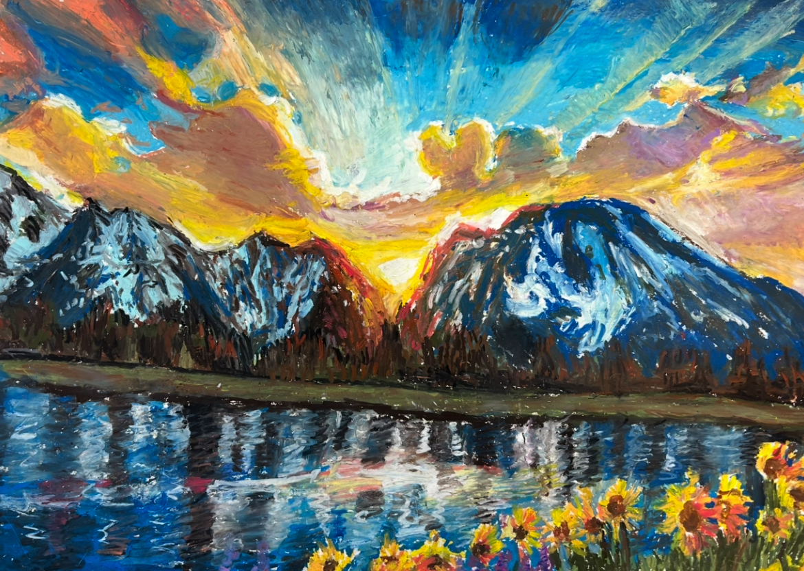
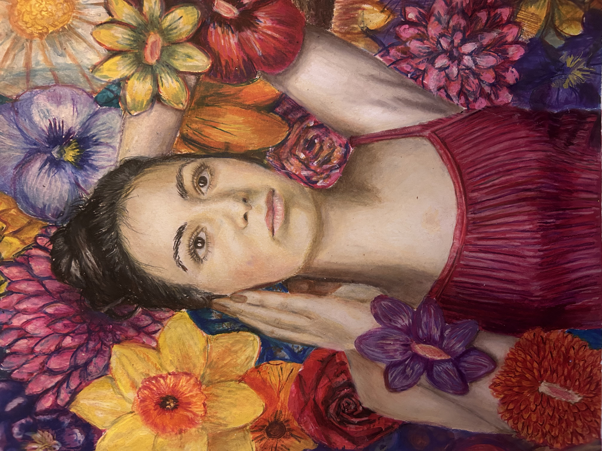
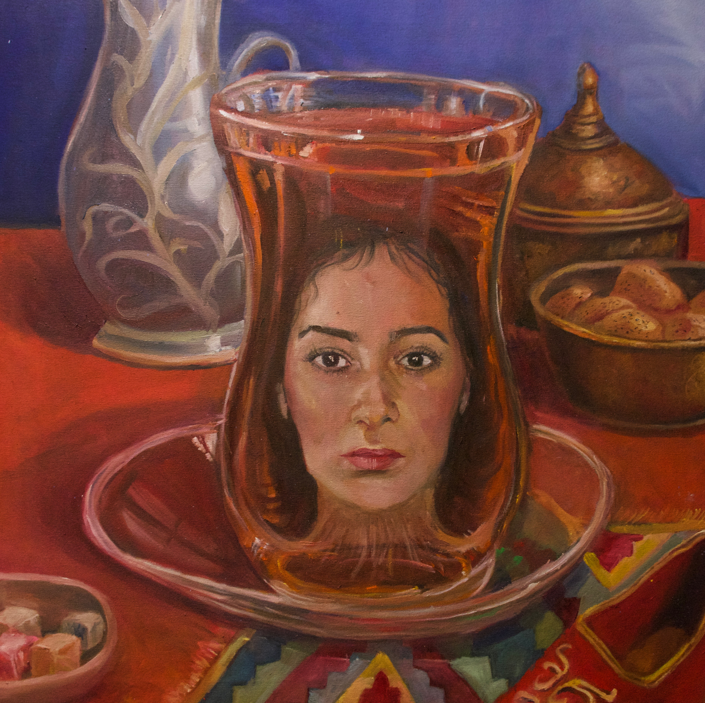
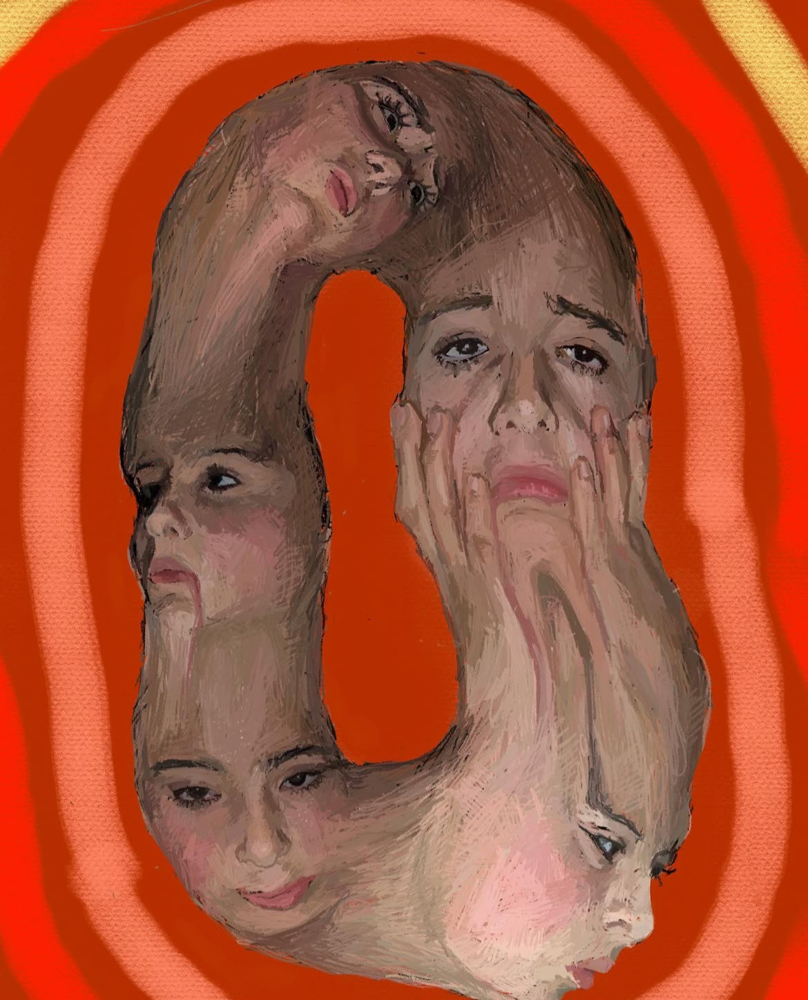
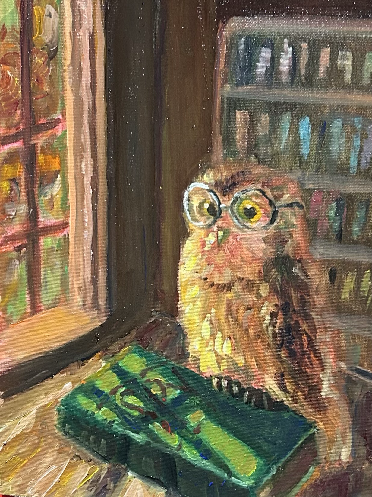

connected...?
Medium: oil painting
Time: 38 hours
Size: 24" × 48"
one of my ap portfolio pieces and personal favorites.

cordset
Medium: oil painting
Time: 15 hours
Size: 9" × 12"
one of my ap portfolio pieces, centered around social media's impact on body-image.

plugged in
Medium: oil painting
Time: 18 hours
Size: 16" × 20"
one of my ap pieces, centered around our dependence on technology.

the screen
Medium: oil painting
Time: 12 hours
Size: 9" × 12"
my final ap piece. i was so ready to be done.

a "helping" hand
Medium: oil paint
Time: 18 hours
Size: 18" × 24"
ap piece. play on digital connection

mountains
Medium: oil pastel
Time: 18 hours
Size: 18" × 24"
this was piece i did for an art class. it was fun to do! i want to try out oil pastels again (heh comission me)

bloom
Medium: colored pencil
Time: 32(ish) hours
Size: 9" × "13
a piece reflecting growth and healing. this piece i did for myself--a symbol of how far ive come :D

suffocated by success
Medium:colored pencil
Time: 32 hours
Size: 18x18
this piece focused on my desire for academic validation; feeling trapped by "success"

an owl painting
Medium: acrylic paint
Time: 17 hours
Size: 18" × 24"
i made this painting for my mother's birthday. it was fun to experiment with heavy body texture-- i don't often use it, but definitely something i will try again in the future!

an untitled still-life
Medium: oil paint
Time: 22 hours
Size: 18" × 24"
this was my second ever still life i did in oil paint. despite that, i don't ottally hate it! but i think i could do a lot better now.

breckenridge
Medium: gouache
Time: 18 hours
Size: 9" × 12"
this was a piece i made for my father, absed on a photo i took of breckenridge. I cant wait to go back!

turkish delight
Medium: oil paint
Time: 30 hours
Size: 30" × 30"
a final for an art class-reflecting my sturggle with connecting/embracing/feeling trapped my cultural heritage.

my gestualt
Medium: digital
Time: 8 hours
Size: 30" × 30"
honestly, i was just playing around with a cool concept. not much meaning behind this piece. but its cool looking lol.

1000 directions
Medium: charcoalt
Time: 18 hours
Size: 18" × 24"
a piece reflectign my anxiety-how it feels as tho u r pulled in 1000 directions

hijacked
Medium: oil paint
Time: 15 hours
Size: 20" × 20"
my first ap piece. Awww! not a huge fan of this one tho. if i had more time it oculdve turned out better.

hungry for screens
Medium: oil paint
Time: 45 hours
Size: 30" × 40"
i definitely was overconf0dent in my time frame for this one. it took so long! it was very hard to finish within two week time framee.But i did it... sort of...

digital garden
Medium: oil paint
Time: 25 hours
Size: 20" × 30"
this was by far one of ym favorite ap pieces.

family dinner
Medium: oil paint
Time: 24 hours
Size: 18" × 24"
ap piece. a modern represenation of family dinner

distance
Medium: oil paint
Time: 30 hours
Size: 20" × 40"
ap piece

owl spy
Medium: oil paint
Time: 18 hours
Size: 11" × 14"
a piece for a class-task was to make an animal portrait of an animal n a place where it does belong. this owl is a war spy...

charcoal portrait
Medium: charcoal
Time: 18ish hours
Size: 18" × 24"
a piece for an art class-- a self portrait reflecting my anxiety.

ocean of memories
Medium: colored pencil
Time: 32 hours
Size: 11" × 13"(werid size ik lol)
a peice reflecting the grief of losing my grandfather--a man i never really got to know.

my first ever oil painting
Medium: oil paint
Time: 12 hours
Size: 9" × 12"
this was my first ever oil painting. at first, it made me hate oil paint. now, its my favorite medium. im glad i stuck with it.

dolomites
Medium: mixed media (gouache, colored pencil)
Time: 15 hours
Size: 9" x 12"
a piece i made for fathers day-- the scene is from a trip we took to the dolomites. i hope this artwork can do the incredible views justice.